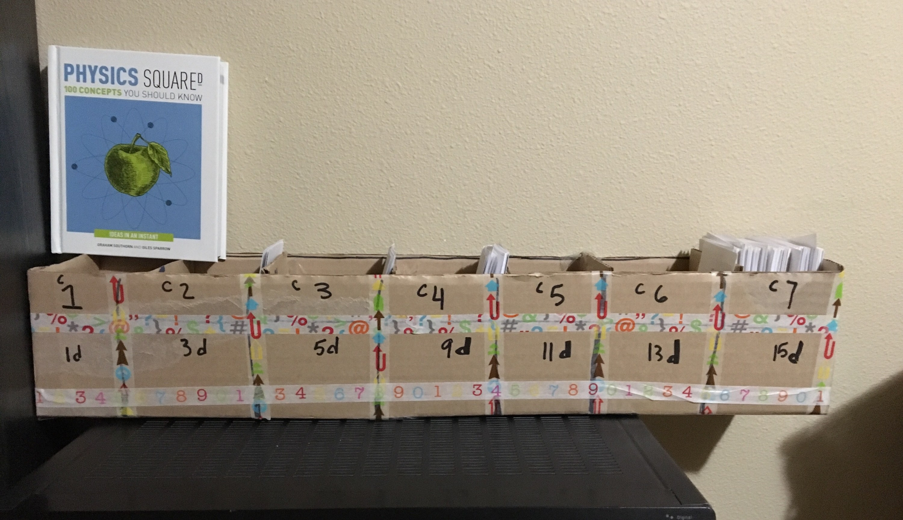
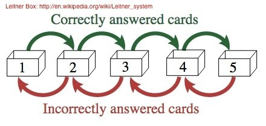

[6.14.17]
Spaced Repetition Learning Systems
lá maith, good day!
Spaced Repetition Learning Systems...what are those? SRS for short, Spaced Repetition Systems are tools to help you memorize anything you wish to have embedded in your brain for a good long while. Be it the nouns and verbs of a new language, definitions of terms from a class you are taking, mathematical equations, or the periodic table of elements, this is a great way to get started memorizing all those details.
When taking a new class and learning all of
this new material, you take notes and mentally exclaim, "I am
totally going to remember all this!"
Yet, three days later, you've forgotten most of that new knowledge
(if you haven't made an effort to retain it). While people say
there's a big learning curve to new subjects, there's also a large forgetting curve that happens 24-36 hours after
you have been presented with new information.
Spaced Repetition Systems take the efficiency of memorizing via flashcards and spread the memorization out effectively over shortened periods of time, allowing the information to seep into your brain at a non-overwhelming speed and increase the rate of retention.
I use the Leitner System, a simple implementation of the SRS concept. I wanted to get down and dirty with the project, so I built my own system out of cardboard and decked it out with washi tape when I finished, to make it look happy.
Not too shabby, eh?
It's pretty shabby.
In case you don't like the idea of making your own Leitner system, there is an online version by the name of Anki that works just as well.
As you can see, I marked each compartment with a "c1, c2, c3,
...cN", giving me seven mini-boxes. In a Spaced Repetition System,
you start out with all your flash cards in the first compartment.
Those cards you review every day. When you get a
definition or concept right, you're allowed to move that flashcard
to the next compartment, where you review those card every three
days. If and when you get them right again, you move those
cards to the next section, where you review them every five
days. If you get a concept or definition wrong, though, you
have to move the card back to the previous compartment.
When you finally get to the end of the compartments and have
reviewed those cards at least 5 times, they can be put into the
retired deck to be reviewed once a month.
Here's a visual:
I have successfully memorized over 400 definitions, concepts, and programming instructions with the Leitner System. It only takes me, at most, five to ten minutes a day to complete. This is extremely useful when you're venturing into a new and daunting field that requires you to remember hundreds of definitions on the spot, such as biology or engineering. The Leitner System and SRSs are an incredible tool to help learn a new language, memorize some babe's phone number, self-teach programming concepts or terms, remember dates for history finals, teach yourself guitar chords, there are no limits. Anything can be put into this, and, if you put in enough effort, you'll have a bunch of neat things embedded in your mind for any situation you find yourself in.
Happy learning!
{thallia}